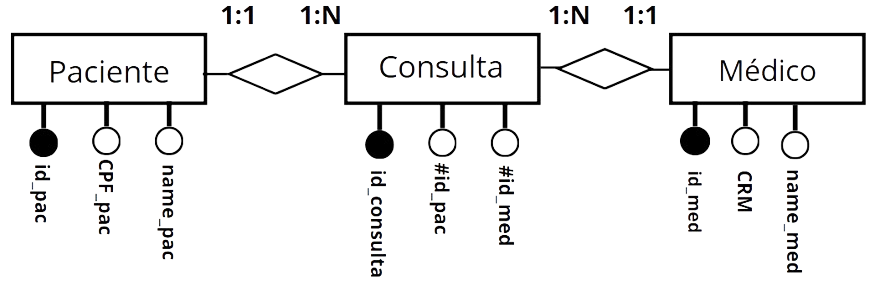
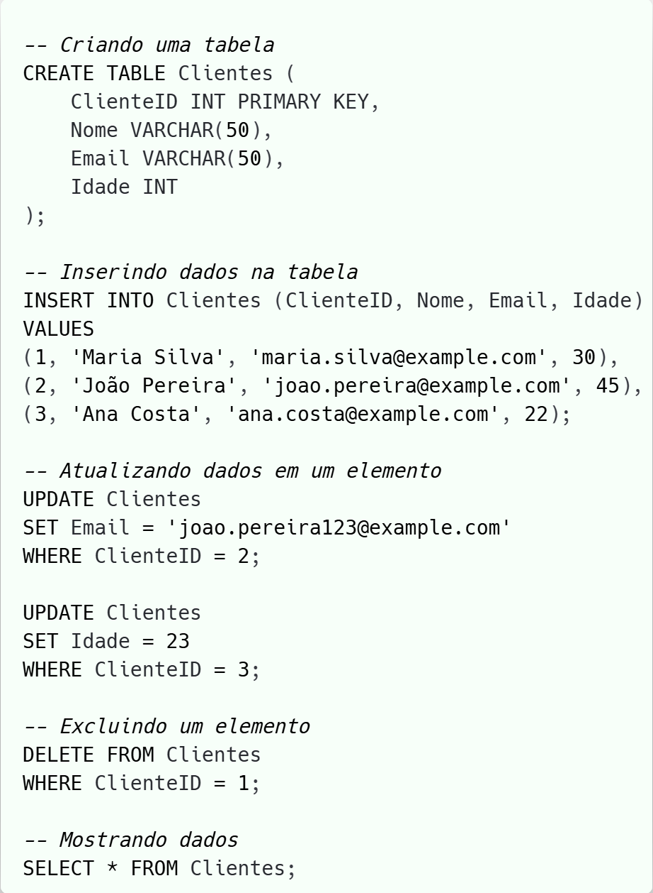

O banco de dados relacional armazena e fornece acesso a pontos de dados estruturados relacionados entre si.
Essas tabelas
consistem em linhas e colunas, onde cada linha representa um registro único e cada coluna representa um
campo de dados específico.
Em nossas aulas, iniciamos com o bando de dados relacional, organizando-os em um formato fixo, como tabelas, onde cada registro segue um esquema predefinido com colunas e tipos de dados.
Diagrama Entidade-Relacionamento (DER)
Para organizar a criação de banco de dados, estudamos o DER, é um tipo de fluxograma utilizado para representar a estrutura lógica deles de forma visual. Ele ilustra como “entidades” as tabelas de dados, que se relacionam entre si dentro de um sistema.
Assim, usam um conjunto definido de símbolos para representar a interconectividade de entidades,
relacionamentos e seus atributos.
Exemplo
Nesse exemplo, pacientes, consultas e médicos estão interconectados em um sistema de gerenciamento de consultas médicas, no qual um paciente pode ser atendido por vários médicos e um médico pode atender vários pacientes, logo, a entidade consulta é criada, para a Primary Key não ser afetada.

Structured Query Language (SQL)
O SQL é uma linguagem padrão utilizada para gerenciar e manipular as tabelas de bancos de dados relacionais.
Pode ser dividido em várias sub-linguagens, cada uma com um conjunto de comandos específicos:
Data Definition Language (DDL)
É usada para definir e modificar a estrutura dos objetos de banco de dados, como tabelas, índices e esquemas
Comando
Descrição
Exemplo
CREATE
Cria uma nova tabela, banco de dados, índice, ou outro objeto no banco de dados.
CREATE TABLE Clientes (id_cliente INT PRIMARY KEY, nome VARCHAR(100));
ALTER
Modifica a estrutura de uma tabela existente, adicionando, removendo ou alterando colunas.
ALTER TABLE Clientes ADD COLUMN email VARCHAR(100);
DROP
Remove uma tabela, banco de dados, índice, ou outro objeto do banco de dados.
DROP TABLE Clientes;
Data Manipulation Language (DML)
Permite inserir, atualizar, excluir e consultar dados nas tabelas do banco de dados.
UPDATE Clientes SET email = 'joao.silva@example.com' WHERE id_cliente = 1;
DELETE
Remove registros de uma tabela.
DELETE FROM Clientes WHERE id_cliente = 1;
Exemplo
Nesse exemplo, através dos comandos do DDL e do DML, criamos, populamos, editamos e imprimimos os dados da tabela Cliente.

Projetos
Assim, com o planejamento por meio do DER e a programação pelo PostgreSQL, foi possível criar sistemas de banco de dados, relacionando e manipulando suas tabelas.
Banco de Dados NoSQL
Por fim, estudamos o banco de dados NoSQL (Not Only SQL), um tipo de banco de dados que difere dos relacionais (SQL) em sua estrutura de armazenamento e modelo de dados, capaz de processar dados não estruturados e semiestruturados.
Eles são projetados para lidar facilmente com grandes volumes de dados distribuídos em múltiplos servidores (escalabilidade horizontal), ao contrário dos bancos de dados relacionais que geralmente escalonam verticalmente.
MongoDB
O software de banco de dados NoSQL usado foi o MongoDB, o qual armazena dados em documentos no formato Binary JSON, estruturado em dados com pares chave-valor, permitindo a criação de esquemas.
Estrutura do MongoDB
A hierarquia dos elementos do MongoDB é muito semelhante a estrtutura do SQL.
Estrutura
Definição
Servidor MongoDB
Instância do MongoDB que pode hospedar múltiplos bancos de dados.
Banco de Dados (Database)
Contêiner de coleções. Cada banco de dados possui coleções de arquivos.
Coleção (Collection)
Grupo de documentos dentro de um banco de dados. Equivalente a uma tabela em SQL.
Documento (Document)
Unidade de dados armazenado em JSON.
Campo (Field)
Um par chave-valor em um documento. Equivalente a uma coluna em SQL.